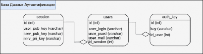

УДК 004.057.4
А.В. Чернышова*1, В.И. Вязмин*2
*1 старший преподаватель, Донецкий национальный технический университет, chernyshova.alla@rambler.ru, OrcID: 0000-0003-2546-2167, SPIN-код: 3318-2066
*2 магистрант, Донецкий национальный технический университет, testerreality@gmail.com, SPIN-код: 5602-3685
Введение
Передача голоса с использованием Интернета достаточно сильно распространена в кругах как частных пользователей, так и в государственных и корпоративных учреждениях. Для передачи медиаданных [1], а, в частности, аудиоданных по сети между пользователями применяется протокол [2] передачи реального времени RTP [3], который является небезопасным, поскольку по умолчанию он не содержит криптографического шифрования и аутентификации [4], а данные в RTP-пакете передаются в открытом виде. Даже учитывая тот факт, что данная технология имеет широкое распространение в корпоративном и государственном секторе, она также содержит ряд существенных недостатков, которые связаны с безопасностью: достаточно несложно установить прослушивание VoIP-звонков [5] и относительно несложно изменить содержание VoIP-звонков. Для обеспечения большей безопасности при передаче голосовых сообщений в программном обеспечении типа мессенджер [6] было решено усовершенствовать существующий механизм передачи информации на базе протокола RTP и дополнить средствами безопасной аутентификации и шифрования аудиоданных, повысив тем самым работу протокола. Описанный ниже механизм можно использовать для программного обеспечения, работающего по модели клиент-сервер.
Механизм регистрации, аутентификации
Перед входом в каждую систему пользователю сначала необходимо зарегистрироваться в ней, а затем при каждом входе совершать аутентификацию. Однако, если при аутентификации пользователь будет использовать только свой пароль, то существует риск того, что злоумышленник сможет получить доступ к паролю пользователя. Для обеспечения большей безопасности пользовательских данных было решено дополнить парольную аутентификацию пользователя для программного обеспечения типа мессенджер использованием QR-кода [7]. Предполагается, что клиентское приложение будет использоваться на персональных компьютерах. Аутентификация в данном приложении производится с использованием логина, пароля, QR-кода и электронной почты.
Как только пользователь запустит клиентскую часть приложения, будет сгенерирована пара ключей RSA (приватный и публичный ключ) [8], затем, с сервером будет осуществлен обмен публичными ключами. Каждый раз при аутентификации будет осуществляться генерация новых ключей. На стороне сервера пользователь будет идентифицирован как незарегистрированный пользователь, ему будет присвоен свой уникальный идентификатор и пара ключей, сгенерированных алгоритмом RSA для этого пользователя. После обмена открытыми ключами между клиентом и сервером, сами ключи будут занесены в базу данных [9] на стороне сервера, в которой будут храниться данные о всех подключениях в текущий момент времени. Этап запуска пользователем приложения продемонстрирован на рисунке 1.
Рисунок 1 – Действия, происходящие на этапе запуска пользователем приложения
На этапе аутентификации будут задействованы три таблицы из базы данных, как показано на рисунке 2.

Рисунок 2 – Структура базы данных для аутентификации
Таблица «session» будет содержать в себе идентификатор подключенного пользователя, а также публичный ключ пользователя, публичный и приватный ключи сервера. Подробная структура этой таблицы представлена табл.1.
Таблица 1 – Структура таблицы «sessions»
Поле таблицы | Назначение |
id | Уникальный идентификатор |
user_pub_key | Публичный RSA ключ пользователя |
serv_pub_key | Публичный RSA ключ сервера |
serv_pri_key | Приватный RSA ключ сервера |
Таблица «users» будет содержать в себе уникальный идентификатор пользователя, логин пользователя (в незашифрованном виде), пароль пользователя (хеш пароля [10], полученный при помощи алгоритмов md5 [11] или sha [12]), электронная почта пользователя (на нее пользователю каждый раз будет отсылаться QR-код), идентификатор сессии, в которой содержатся ключи. Подробное описание данной таблицы приведено в табл.2.
Таблица 2 – Структура таблицы «users»
Поле таблицы | Назначение |
id | Уникальный идентификатор |
user_login | Логин пользователя (в незашифрованном виде) |
user_pswd | Пароль пользователя (хеш от пароля) |
user_mail | Электронная почта пользователя (в незашифрованном виде) |
id_session | Идентификатор сессии для данного пользователя |
Таблица «auth_key» будет содержать в себе уникальный идентификатор ключа, сам ключ, который необходим для идентификации по QR-коду, и идентификатор пользователя, к которому относится этот ключ. Более подробное описание таблицы показано в таблицах 3.
Таблица 3 – Структура таблицы «auth_key»
Поле таблицы | Назначение |
id | Уникальный идентификатор |
Key | Сгенерированный ключ, который будет находится в QR- коде |
id_user | Идентификатор пользователя, которому этот ключ принадлежит |
Дальше рассмотрим сценарий, когда пользователь не зарегистрирован в системе, и собирается пройти этап регистрации с последующей работой в приложении. В самом начале, после того как был осуществлен обмен ключами с сервером, пользователь выбрал этап регистрации. Во время регистрации пользователь ввел свой логин, пароль и адрес электронной почты. После этого от пароля пользователя берется хеш, затем все введенные пользователем данные объединяются в одну строку, после чего полученная строка переводится в base64 [13], шифруется помощи приватного RSA ключа пользователя и отправляется на сервер. Сервер в свою очередь, получает эти данные, расшифровывает публичным ключом пользователя, преобразует данные в понятный вид и проверят на достоверность (существует ли пользователь с таким электронным адресом или логином), и в случае, если валидация была пройдена, эти данные заносятся в базу данных. Данная процедура показана на рисунке 3.
Рисунок 3 – Процедура регистрации и аутентификации пользователя
Затем, пользователь решает зайти в систему как зарегистрированный пользователь. После того, как пользователь ввел свои данные, и они прошли проверку на сервере (верный пароль от аккаунта), сервер отвечает на это, и затем клиентская часть приложения просит ввести QR-код, который был сгенерирован сервером и отправлен по электронной почте пользователю. После чего пользователь заходит в свою электронную почту, загружает высланный сервером QR-код, вставляет его в нужное поле в клиентской части, где этот QR-код расшифровывается, получается строка в base64, затем шифруется алгоритмом RSA и отправляется на сервер для сверки. Если все пройдет успешно, то пользователь может работать с клиентской частью программной системы. Ориентировочная схема представлена на рисунке 4.
Рисунок 4 – Двухфакторная аутентификация пользователя
В момент, когда пользователь ввел верные данные и был отправлен запрос на сервер о генерации QR- кода, серверная часть приложения выполняет предположительно следующий механизм:
генерирует случайный текст случайной длины (от 12 до 40) символов, например QW!@#(IU&^EN;
берется случайно сгенерированный текст и преобразуются в base64;
полученная строка шифруется алгоритмом RSA;
зашифрованный текст помещается в QR-код;
QR-код отправляется на почту пользователю;
Предложенный алгоритм генерации QR-кода на серверной части приложения показан на рисунке 5.
Рисунок 5 – Генерация QR-кода на серверной части приложения
После осуществления всех вышеперечисленных манипуляций, данные пользователя, предположительно, должны быть надежно защищены. Стоит отметить, что данные пользователя будут надежно защищены только в том случае, если злоумышленнику не удастся заполучить доступ к их электронной почте. Поэтому следует не забывать об обеспечении необходимого уровня защиты электронной почты. Также, следует отметить, что сгенерированный QR-код будет действительным в течении 5 минут, после чего сессия пользователя будет завершена и пользователю будет предложено выслать новый QR-код. Предположим, когда срок действия QR- кода истечет и пользователь попробует пройти с ним аутентификацию, сервер уже изменит значение кода в базе данных и поэтому пользователю не удастся совершить аутентификацию со старым QR-кодом.
Выводы
В рамках статьи рассмотрена возможность повышения эффективности протокола передачи голосовых сообщений для мессенджера с криптографической защитой на этапе регистрации и аутентификации пользователя. Предложен алгоритм регистрации и аутентификации пользователя в приложении для передачи голосовых сообщений на основе парольной аутентификации и использования QR-кода, как дополнительного средства аутентификации. В дальнейшем планируется выполнить проектирование и программную реализацию авторского протокола обмена голосовыми сообщениями с возможностью использования криптографической защиты средствами протокола Signal.
Литература
Медиа [Электронный ресурс] // Академик. – Электрон. дан. - 2020. – Режим доступа: https://dic.academic.ru/dic.nsf/ruwiki/1030664. - Загл. с экрана.
Что такое сетевой протокол? [Электронный ресурс] // АВК - системная интеграция. – Электрон. дан. - 2020. – Режим доступа: https://www.avk-company.ru/articles/25/. - Загл. с экрана.
RTP и RTCP: протоколы для IP-телефонии [Электронный ресурс] // КомпьютерПресс. – Электрон. дан.
- 2020. – Режим доступа: https://compress.ru/article.aspx?id=11931. - Загл. с экрана.
Что такое аутентификация [Электронный ресурс] / Никита Казеичев // UniSender. – Электрон. дан. - 2020. – Режим доступа: https://www.unisender.com/ru/support/about/glossary/chto-takoe-email-autentifikaciya/. - Загл. с экрана.
VoIP или IP-телефония [Электронный ресурс] // Обучение в интернет. – Электрон. дан. - 2020. – Режим доступа: https://www.lessons-tva.info/edu/trainbus/1_1.html. - Загл. с экрана.
Что такое мессенджер, для чего он нужен и как им пользоваться [Электронный ресурс] // KtoNaNovenkogo. – Электрон. дан. - 2020. – Режим доступа https://ktonanovenkogo.ru/voprosy-i- otvety/messendzher-chto-ehto-takoe-prostymi-slovami.html. - Загл. с экрана.
Что такое QR-код? [Электронный ресурс] / Наталья Устименко // eSputnik. – Электрон. дан. - 2020. – Режим доступа: https://esputnik.com/blog/chto-takoe-qr-kod. - Загл. с экрана.
База данных [Электронный ресурс] // Oracle. – Электрон. дан. - 2020. – Режим доступа: https://www.oracle.com/ru/database/what-is-database.html. - Загл. с экрана.
MD5 [Электронный ресурс] // Wikipedia. – Электрон. дан. - 2020. – Режим доступа: https://ru.wikipedia.org/wiki/MD5. - Загл. с экрана.
SHA-2 [Электронный ресурс] // Wikipedia. – Электрон. дан. - 2020. – Режим доступа: https://ru.wikipedia.org/wiki/SHA-2. - Загл. с экрана.
Base64 [Электронный ресурс] // Академик. – Электрон. дан. - 2020. – Режим доступа: https://dic.academic.ru/dic.nsf/ruwiki/81670. - Загл. с экрана.
QR-код.